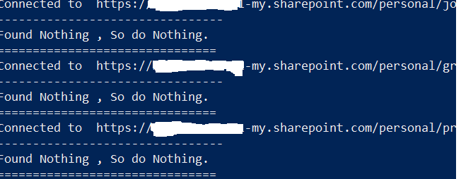

Recover Deleted Teams Meeting Recordings
Summary
With the new 120 day expiration policy , some customers have been caught unaware. What do you do if you need to recover across thousands of accounts. This is supposed to be run in stages , i suggest using this as a sample to build your own script/s. I suggest you copy and paste each stage at a time.
Recycle bin before restoration

Grant Access to One Drive

Looping Through One Drive's

Restoration of files

Recycle bin After Restores

Recordings Folder After Restores

Remove Access

Testing Access

# 1 Variables
$SiteCollAdmin="admin@Tenant.onmicrosoft.com"
$Tenant="TenantName"
# 2 Connect to the SharePoint Admin Service consider using an App registration or a Service account.
Connect-spoService -url https://$Tenant-admin.sharepoint.com
# 3.1 Get all the OneDrive URLS
Get-SPOSite -IncludePersonalSite $True -limit all -Filter "Url -like '-my.sharepoint.com/personal/'"|Select Url,LockState,Status,LastContentModifiedDate,Title,Owner |Export-Csv c:\temp\sites.csv -NoTypeInformation
# 3.2 Get any Deleted OneDrive's
Get-SPODeletedSite -IncludeOnlyPersonalSite |Select Url,LockState,Status,LastContentModifiedDate,Title,Owner |Export-Csv c:\temp\DeletedOnedrivesites.csv -NoTypeInformation
# 3.3 Get SPO Teams
$teams=Get-SPOSite -limit all -Template "GROUP#0" -IncludePersonalSite:$false|Select Url,LockState,Status,LastContentModifiedDate,Title,Owner |Export-Csv c:\temp\Teamssites.csv -NoTypeInformation
# 4 import CSV'sharepoint
$Sites = import-csv -path c:\temp\sites.csv
$DeletedSites = import-csv -path c:\temp\DeletedOnedrivesites.csv
$TeamsSites= import-csv -path c:\temp\Teamssites.csv
# 4.1 Restore deleted OneDrive's (Optional)
foreach ($DLsite in $DeletedSites){
Restore-SPODeleted -identity $DLsite.url
}
# 5 Grant access to OneDrive & Repeat for Deleted Sites
foreach ($site in $Sites){
Set-SPOUser -Site $site.Url -LoginName $SiteCollAdmin -IsSiteCollectionAdmin $True
write-host "Granting Access to "$site.Url
}
# 5.1 Repeat for Deleted Sites
foreach ($DLsite in $DeletedSites){
Set-SPOUser -Site $site.Url -LoginName $SiteCollAdmin -IsSiteCollectionAdmin $True
write-host "Granting Access to "$site.Url
}
# 6 Main Function --- Restore-SPODeleted items Per Site.---
foreach ($site in $Sites){
Connect-pnponline -url $site.Url -interactive
Write-host "Connected to "$site.url
Write-host "--------------------------------"
#For All *.mp4 use the line below
#$Deleteditems=Get-PnPRecycleBinItem |? LeafName -like '*.mp4' |Restore-PnPRecycleBinItem -force
#Restore just Meeting recordings that haven't been renamed.
$count=Get-PnPRecycleBinItem |? LeafName -like '*Meeting Recording.mp4'
if ($count.count -le 0){
Write-host "Found Nothing , So do Nothing."}
if ( $count.count -gt 0){
$Restore=Get-PnPRecycleBinItem |? LeafName -like '*Meeting Recording.mp4' |Restore-PnPRecycleBinItem -force
Write-host "Restored" $count.count}
Write-host "==============================="
}
# 7 Removing Access to Onedrive & Repeat for Deleted Sites
foreach ($site in $Sites){
Set-SPOUser -site $Site.url -LoginName $SiteCollAdmin -IsSiteCollectionAdmin $False
write-host "Removing Access to "$site.Url
}
# 8
Disconnect-pnponline
Check out the PnP PowerShell to learn more at: https://aka.ms/pnp/powershell
The way you login into PnP PowerShell has changed please read PnP Management Shell EntraID app is deleted : what should I do ?
Source Credit
Used various sources for pieces of the script above, thank you kindly.
Contributors
| Author(s) |
|---|
| Jason Baxter |
Disclaimer
THESE SAMPLES ARE PROVIDED AS IS WITHOUT WARRANTY OF ANY KIND, EITHER EXPRESS OR IMPLIED, INCLUDING ANY IMPLIED WARRANTIES OF FITNESS FOR A PARTICULAR PURPOSE, MERCHANTABILITY, OR NON-INFRINGEMENT.